|
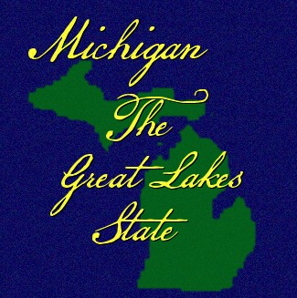
Welcome to
SpiritFires Michigan!
THE Great Lake State!
The
Wolverine State!
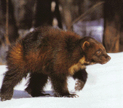
Michigan has long had an unofficial nickname: "The
Wolverine State." However, evidence seems to show that if wolverines
ever lived in Michigan, they would have been very rare. We don't
know exactly how the state got the nickname, but two stories attempt
to explain it.
Some people believe that Ohioans gave Michigan the
nickname around 1835 during a dispute over the Toledo strip, a piece
of land along the border between Ohio and Michigan. Rumors in Ohio
at the time described Michiganians as being as vicious and
bloodthirsty as wolverines. This dispute became known as the Toledo
War.
Another reason given for the nickname is a story that has Native
Americans, during the 1830s, comparing Michigan settlers to
wolverines. Some native people, according to this story, disliked
the way settlers were taking the land because it made them think of
how the gluttonous wolverine went after its food.
"Michigan"
comes from the Indian word "Michigama" meaning great or big lake.
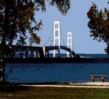
Mighty Mac!
Total Length of
Bridge (5 Miles)
Height of Main Towers above Water 552 Ft
Began Construction May 7, 1954
Open to traffic November 1,
1957
Total Length of Wire in Main Cables 42,000 Miles
My
parents are from the Cheboygan/Mackinaw area,
and my mom said
she remembered when the
only access to the Upper Pennisula was
by car ferry!
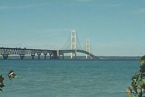
The Mighty Mac is operated and maintained by the
State of
Michigan Mackinac Bridge Authority.
The fare for an auto is
$1.50, this money
is used for the constant upkeep of our
Majestic Mac!
There is some 30,000+ vehicles that cross
The
Mackinac Bridge on an average month!
Michigans Upper Pennisula, the "last frontier" of our beautiful
State!
More than 150 waterfalls in beautiful Upper Pennisula!
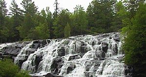 Bond Falls
Manido Falls 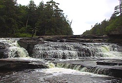
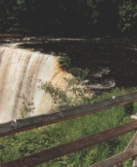
Tahquamenon Falls
Pictured Rocks, Lake Superior Shoreline
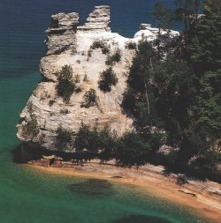
Common terminology for Michiganders:
Yooper: resident of the U.P
Troll: those who live below the
(Mighty Mac) bridge!
Sitting just a few miles off shore
of Saint Ignace,
in Lake Huron is the 'Jewel' of Michigan.
Mackinac
Island!
A truly beautiful, historic site!
Claims to fame
is Fort Mackinac, THE Grand Hotel,
which was the setting for
Christopher Reeves
movie: "Somewhere In Time"!
Mackinac
Island Fudge! And the 'no cars' law!
Absolutely no automobiles
can be found on this
pristine Island! The mode of transportation
is
horses, horse and carriage, bicycles,
snowmobiles in the
winter.
The only access to the Island is by ferry in the
spring, summer and fall. Or small planes.
And snowmobiles
once the lake freezes!
I've been a life-long resident of Michigan! I love my State! It
has something for everyone! Boating, swimming (NO sharks!), fishing,
hunting, skiing, snowmobiling, trails, camping, waterfalls, color
season (fall), historical sites, islands, sand dune climbing...with
or without a dunebuggy! Beach-combing...lots of beaches! In fact
over 3,200 miles of Shoreline! Equine trails that stretch across the
state. Flatlands, farms and forests!
Michigan shore-to-shore
trail and trail ride,
sponsered by the MTRA
(Michigan
Trail Riders Association),
goes from lakeshore to lakeshore.
People from all over the world come to
take part in the
rides.
October color tour is by far the most popular!
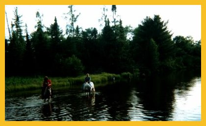
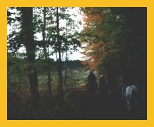
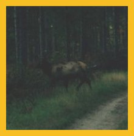
We're the only State in the nation where you can look at your
right hand and say "I live right here!" and pinpoint where you live!
:)
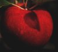
Third largest apple producer in the World! Love
them Michigan apples! Our State flower is the Apple Blossom.
Also, Michigan has a huge Cherry crop industry! Traverse City is
host to The Annual National Cherry Festival.
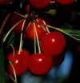
AND the Nations largest pumpkin crop producers!
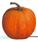
Guardians of The Lakes!
Over 100
historic Lighthouses line our inland seas!
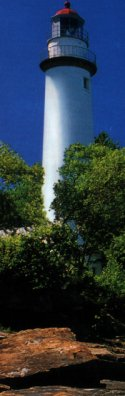 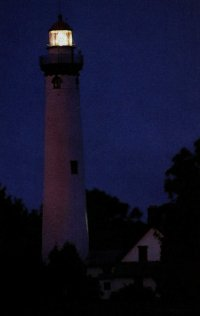
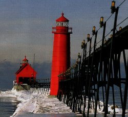
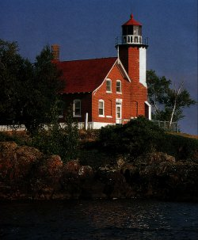
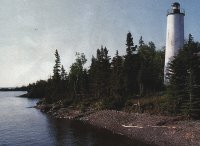
Some facts about My Michigan!
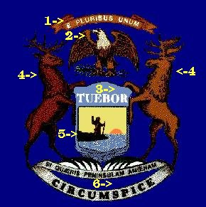
1--"E Pluribus Unum."
These words come from
our national motto meaning, "From many, one."
2--Below is the
American Eagle, our national bird.
In his claws he holds three
arrows and an olive branch with 13 olives. The arrows show that our
nation is ready to defend its principles. The olive branch means we
want peace. The olives stand for the first 13 states.
3--"Tuebor," meaning, "I will defend," refers to Michigan?s
frontier position.
4--The shield is held by two animals
representing Michigan...the elk on the left and the moose on the
right.
5--Michigan is on an international boundary, and the
figure of the man shows his right hand raised in peace. The left
hand holds a gun to say that although we love peace, we are ready to
defend our state and nation.
6--"Si Quaeris Peninsulam Amoenam
Circumspice" means, "If you seek a pleasant peninsula, look about
you."
Evidently this refers to the Lower Peninsula.
The
Upper Peninsula was added in 1837.
State Bird: Robin
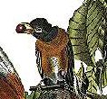
State Fish: Brook Trout
State Tree: White Pine
State
Stone: Petoskey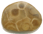
State Animal: White-Tailed Deer
We also have State Soil,
State Turtle, etc.
The present flag,
Michigan's third since becoming
a state in 1837
was adopted by Public Act 209 of 1911.
"I pledge allegiance to the flag of Michigan,
and to the state
for which it stands,
2 beautiful peninsulas united by a bridge of
steel,
where equal opportunity and justice to all is our ideal."
Our State is hosts for some well-known
Unniversities!
2 of our schools are in the Top 10 College
football.
Yes! I'm a Wolverine fan!
CMU Chippewas used to use a Native American headdress as their
logo, but it has been removed in the last couple of years.
Also...we're HOME of THE Detroit Red Wings!
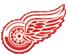
Michigan! My Michigan, not 'official' State
song, but it is used. Schools also adopted it for use in musical and
patriotic programs. The music is O'Tannebaum, a most fitting score
for the State that will be donating this years Christmas tree to the
Nations Capitol. "The Tree of Hope" will be travelling from
Michigans Upper Pennisula in the next couple of days. 11/15/01.
Michigan, My Michigan
Written by: William Otto
Miessner & Douglas M. Malloch
A song to
thee, fair State of mine,
Michigan, my Michigan;
But greater
song than this is thine,
Michigan, my Michigan;
The whisper
of the forest tree,
The thunder of the inland sea;
Unite in
one grand symphony
Of Michigan, my Michigan.
I sing a
State of all the best,
Michigan, my Michigan;
I sing a State
with riches blest,
Michigan, my Michigan;
Thy mines unmask a
hidden store,
But richer thy historic lore,
More great the
love thy builders bore,
Oh, Michigan, my Michigan.
How
fair the bosom of thy lakes,
Michigan, my Michigan;
What
melody each river makes;
Michigan, my Michigan;
As to thy
lakes the rivers tend,
Thy exiled children to thee send
Devotion that shall never end,
Oh, Michigan, my Michigan.
Thou rich in wealth makes a State,
Michigan, my
Michigan;
Thou great in things that make us great,
Michigan,
my Michigan;
Our loyal voices sound thy claim
Upon the
golden roll of fame
Our loyal hands shall write the name
Of
Michigan, my Michigan.
Michigan is the birthplace to 2 very famous products!
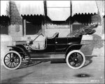
"You can paint it any color, so long as
it's black!"
The Automotive Industry got its start in Michigan
in 1906!
Henry Ford Museum & Greenfield Village
20900
Oakwood Boulevard
PO Box 1970
Dearborn, MI 48121
Battle Creek, MI
Kellogg is the world's leading producer
of cereal and convenience foods.
Will Keith Kellogg founded
the W. K. Kellogg company,
in 1908; which continues to produce
many
popular breakfast cereals.
Michigan History
Michigan
Campgrounds
Michigan Attractions
Everything Michigan!
|